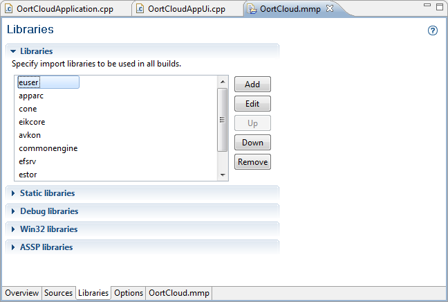

The MMP editor libraries window lists the libraries used by the currently selected build configuration in the selected project. The MMP editor libraries window is shown in Figure 1. Click on a library group to expand the list of libraries and show the related control buttons. You can add, remove or edit the list of libraries for each group. You can also move libraries up or down in the list.

Figure 1 - MMP Editor Libraries window
| Name | Function |
|---|---|
|
Libraries |
Specify import libraries to be included in all builds. |
|
Static libraries |
Specify additional static libraries to be used in all builds. |
| Debug libraries | Specify additional libraries to be used for debug builds only. |
| Win32 libraries | Specify additional libraries for Win32 builds only. |
| ASSP libraries | Specify libraries for ASSP builds. If you are not linking to the Symbian OS kernel you can ignore this section. |